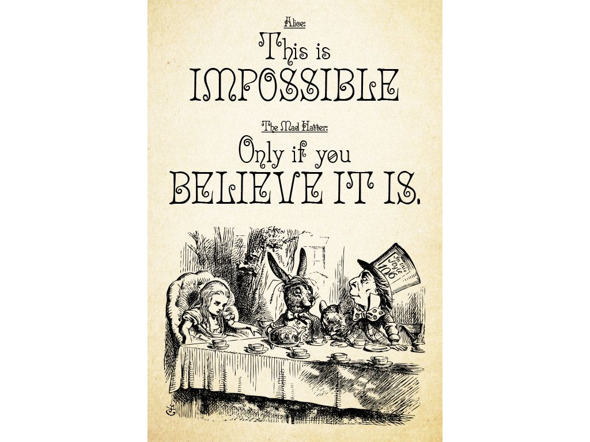

A movement by and for undivided human society to unite and live harmoniously, compassionately and prosperously as ONE World Family, as per the natural laws of Existence, as “human” beings.
Undivided Human Society. Wellbeing, justice, happiness & prosperity for all.
Every human being is an integral, co-dependant part of the World Family, and is subject to laws of nature. Hence prospering best when living in accordance with true nature of Self.
Since its birth, the principal need, opportunity and challenge of every human and humankind, is to live well in continuity, with stable assurance of finding happiness, satisfaction, peace & love within, and in all relationships. We have tried and are trying many assumed approaches, social and personal experiments, but mostly in futility. We may have made technological progress and (some of us) may have gathered more than necessary living comforts, wealth or power, but still almost every individual, family, sect or nation is still divided, conflicted, unhappy within itself, with each other and with rest of nature. Whether rich or poor, powerful or weak, every human is largely unhappy and distressed within onself, relationships or with some situation or another. Since our assumptions are often based on imagination or faith instead of personally verified knowledge, they change and hence humans so far all across the time on Earth, have exhibited indefinite (unpredictable) conduct.
Check the list of the good bad and ugly going for us in old times and in present. Also read about the human problem, need, opprtunity and solution.
When and how will the suffering end, and true wellbeing begin?
Coming together with a shared, universal perspective is our only refuge
We may have different viewpoints on nature of Self and reality, different skin color, occupations and opinions, but as humans we are all the same. Through honest objective and subjective inquiry humanity as society and each human is bound to understand and realise Truth in the same way, because we exist in the same Truth. Our sameness as humans, the onlyness of Truth (Existence in which we co-exist), honest self inquiry for Truth, and agreement on the way to live, is the (only) unifying ground, which will provide Life the absolute and permanent resolution it needs and seeks.
The proposal
Finally, we have a proposal that guarantees to solve all human problems and needs - within each individual, family, village, area, nation, global human society and with rest of Nature - for as long as humans live on Earth. The education arm of the social working model will present the same proposals to the society and help people internalize and experience the knowledge, in methods custom designed for children, youth and families.
Unlike most of previous human approaches based on faith before knowledge, these proposals encourage to assume (have faith in) only what is known and understood by oneself as reality. Instead of prescribing a list of do’s & don’ts, these proposals simply appeal to common human’s mind for developing greater understanding and thereby live resolved for good.
This is our opportunity to transform and contribute
Every human’s deepest inspiration is to live with a feeling of harmony, happiness and fulfillment in continuity. Humankind’s need is a social culture, environment and tradition that fosters the same, in a way naturally acceptable to every human being. These proposals are about this only. > Shall you wish to understand, join and contribute in any way, please get in touch
The approach

In order to align together our only refuge is to understand universal reality and come together with that perspective to live together as “humans”. For this we need a parallel program for educational and societal reform. Here are the key points of the current proposed approach.
- Life education or human values education, aimed at developing “human consciuousness” in humans, is by providence the foundation pillar of the program, because right understanding is the key to living happily with justice and ensuring fulfillment in all relationships with other humans or rest of nature.
- It is a family centered approach. Ream more about what is meant by family.
- It is a consensus based approach of self governance where all people affected by any decision must agree with consensus.
- Setup few villages and localities as the foundation nurseries of Undivided Human Society on ground. (Currently the first pilot is being conducted by residents of village Saalig, located in Tehsil Dharamsala, Dist. Kangra, India)
- Pick up few inspired families in pilot villages. Establish and prove the model through them.
- Put forward the first draft of vision, values, manifesto, policies and constitution for the undivided human society. [early 2020]. The working draft of the aims and objectives, as written in 2018, can be found here. The working draft of charter of values, drafted in November 2017, can be found here.
- Develop and set up online infrastructure to help in relevant aspects of the social program for Self Governance. For ex. register as member individual, family, group from anywhere; study and understand from online content; discuss; network; collaborate; help, get help; local circular e-commerce; travel to member spaces and families for networking, experience & learning etc.
- Incubate and establish from village councils to the world council and get the program going at global level. Collaborate between these teams to ensure success of local pilots.

Disclaimer
This is not a sect, religion or community
Here we are not talking of any sect or religion. The object of Undivided human society unconditionally includes and loves every human as part of it, because only with unconditional acceptance we start to be undivided. And reality is that we are indeed undivided by nature, but only divided by our imaginary boundaries and conflicts. So, everyone is invited to understand and participate in the personal-social transformation and the program.
This is a movement by Undivided Human Society
This is an of Human Society, by Human Society and for Human Society and the World movement, not to be ever owned by any individual or organization, but only by Free, Self Governing, “Undivided” “Human” Society. Lifemaker is just a good name to describe the feeling and purpose of what this movement is about. Viridus, a partner team for the same cause who are introducing universal wellbeing education to universities and colleges in India, is calling the same movement as Global Wellbeing Movement. There can be more names as well, but the object is this movement itself, and is shared by all of us as the same.
What’s happening 2019?
- Pilot by members of Village Saalig & in Dharamsala town, Himachal Pradesh. Life education aspect of working model has been kickstarted, for children and families of the village. Local production of food based products has also started.
- Madyastha Darshan community and Universal Human Values Education team are imparting Life Education workshops and courses to individuals, families, schools and universities in India and Bhutan for few years now.
- Our group is regularly meeting and collaborating as likeminded society members. We are engaging in discussions and documentation of
- Aims, objectives, universal human values, policies, constitution
- Working model
- Setting up of online discussion forum and universal education module
Call to the tribe
Every human is seeking happiness, mostly externally. Happiness can only be found when we are in sync with own true nature, and it reflects in fulfilment of our relationships with the world and with our own Self. The individuals are like small streams, which may or may not be able to make to the ocean alone. But together, our company of Truth can form a large river, which surely will reach the ocean of realised co-existential bliss; and there will be mutual wellbeing and happiness all along the way and for all our future generations to come on Earth.
You can reach us out via the Lifeline
We are thankful
- Thanks to every human of past and present, who has contributed in their unique ways
- Thanks to all the messengers, philosophers, teachers, scientists, social reformers, parents and all loving beings, for their sharing of personal knowledge and contribution towards human evolution and upliftment. We wish to see their work to completion. We want to see Humanity reach its full potential.
- Thanks to Shri A Nagraj & Madhyastha Darshan and Universal Human Values Education team for the educational work done by them in this direction.
- Thanks to the Universal Teacher.